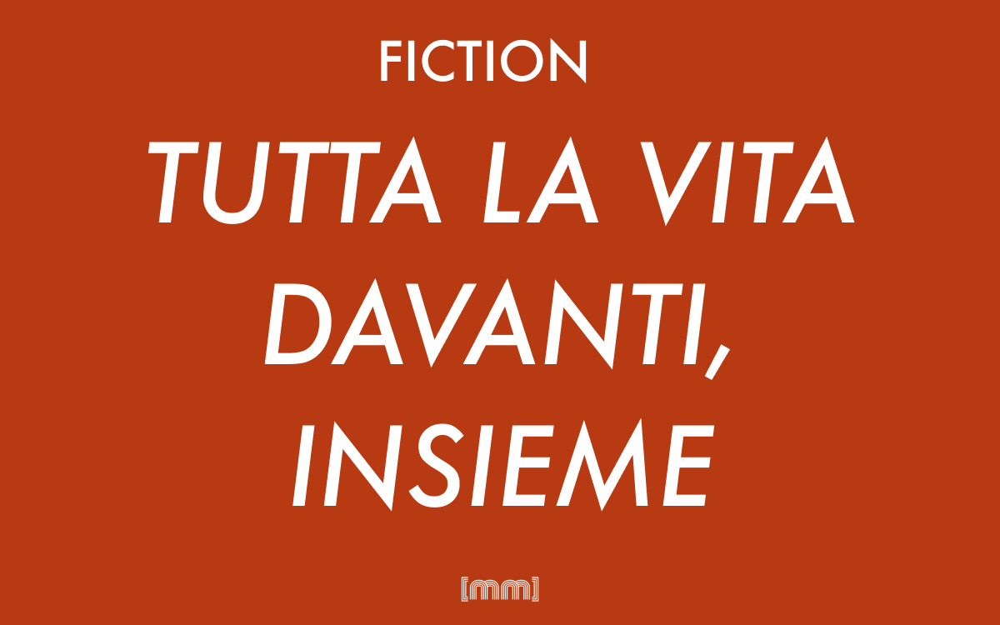

Narrativa · Racconto · Italiano
Tutta la vita davanti, insieme
Un racconto sull'adolescenza e su tutti i suoi alti e bassi.
La verità?
La verità è che essere un adolescente fa schifo e nessuno lo dice, anche se poi quando uno ci va a pensare bene ogni periodo ha i suoi alti e bassi, e questa - concedetemi - è una cosa molto profonda detta da una persona attualmente nella mia situazione.
Mi spiego.
SIcuramente vi state chiedendo come sia finito qui in questo preciso momento nell’universo, ed è una buona domanda e grazie di averla fatta, per cui diciamo che è bene iniziare da qui. Sono qui, tra i pali, con un paio di guanti troppo grandi per la mia taglia. A 11 metri da me c’è custu malloru mannu, pronto a caricare. Paridi unu bisonti. E allora la domanda che sorge spontanea è Com’è che tu, la più grande ala sinistra che la storia del calcio vedrà mai sei finito in porta al 85esimo minuto della partita contro la seconda squadra fuori classifica dell’Assemini 80 che infiniti lutti addusse a squadrettine come la tua?
Grazie anche per questa domanda, così pertinente che sembra me la sia fatta da solo. Senza divagare troppo, cosa che mi dicono che faccio di tanto in tanto, tipo quando prof. Olla una volta mi ha chiesto di spiegargli la differenza tra Schopenhauer e Hildegard e io per sbaglio-apposta gli ho sparato a vomito tutta la mia erudizione sulle Monadi e sul fatto che sembrano una di quelle cose che trovi come boss nei videogiochi. Comunque. Ero in panchina, cosa che purtroppo succede più frequentemente di quanto dovrebbe, ma si sa, Nemo is profet in patriam, (mi pare si dica cosí) e stiamo giocando adeguatamente e abbiamo preso solo 3 gol alla fine del primo tempo e ovviamente il Mister inizia i cambi e poi continua i cambi e poi finalmente all’83esimo mi fa alzare, togliere la felpa, ed ecco che tra le urla e i cori del nostro enorme pubblico di casa - conto un massimo di 8 spettatori - faccio il mio glorioso ingresso in questa importantissima partita della categoria Esordienti provinciale. Adesso devo solo recuperare palla 5 volte, fare 5 assist poderosi e portare la squadra alla vittoria mentre mancano 7 minuti e mezzo più recupero. Ce la possiamo fare. Manco faccio in tempo a dirlo che vedo il moderatamente sovrappeso portiere nostro falciare malamente l’attaccante loro e venire immediatamente dopo venire invitato dal direttore di gare a rientrare anticipatamente negli spogliatoi. Abbiamo appena finito i cambi, minch’e cuaddu. Vabbè, a questo punto presumo si capisca cosa succede. Dopo il parapiglia mi infilano la sudatissima maglia col numero 1 e mi mettono tra i pali.
Il tipo di fronte a me è solo grosso. Secondo me è un trentaquattrenne che si sta facendo passare per ragazzino per fare lo splendido con i suoi colleghi il giorno dopo al lavoro. Dirà Ievi ho fegnato all’ulvtimo minuto su vigove e mi hanno povtato in tvionfo a tipo Cesave in Gallia perché nonostante sia grande come un gorilla di montagna almeno un qualche difetto dovrà averlo, no? Gli ho assegnato un erre moscia d’ufficio, sperando che in seguito si scopra che è uno di quelli che dorme ancora con la luce accesa la notte, ma boh, mi sembra improbabile. Al massimo a Mommotti lo spaventa lui.
Dicevo. La verità? La verità è che essere adolescente fa schifo e nessuno lo dice. La gente si pensa che solo perché sei piccolo e non puoi votare allora sei necessariamente una testa di pillona, che poi oh, in molti casi è pure vero, ma mi sa molto che la gente si dimentica di cosa provava quando aveva 17 anni, forse proprio perché questo periodo così tanto bello della vita forse bello-bello non lo era, e tutti questi sguardi nostalgici al quanto stavamo bene al tempo sembrano essere sempre scremati e limati e riadattati e levigati fino a far sembrare una pietra burda un diamante. Noi c’abbiamo una gerarchia sociale come tutti voi che siete gente frustrata con vite d’ufficio in cui dovete pretendere di ridere quando il capo fa battute bambe, e noi lo stesso pari-pari, solo che invece che al capo devi far credere ai tuoi amici che ti piaccia andare in discoteca perché altrimenti ti mollano a casa il sabato sera e ti tocca restare appillonato a guardare Ballando con le Stelle con tua mamma seduto su una sedia in cucina, e boh, eya, non sarà un dramma e ci funti is pippiusu in Africa chi no pappanta pronti a essere usati come esempio, ma questi paragoni non stanno in cielo nè in terra, specie quando ti vengono detti da genti schina longa che passa le giornata a grattare Gratta e Vinci al baretto. Abbiamo una società in cui c’è da lottare per farsi accettare o anche solo per essere notato da ragazze come Laura. Cess, quanto è bona Laura. Pensate se fosse qui adesso, arrivata casualmente al campetto mentre passeggiava con le amiche, e mi avesse visto e avesse deciso di restare ad assistere a questi pochi ma intensi minuti di gioco e guardare me, futura famosa ala sinistra di fama mondiale ma temporaneamente portiere-panchinaro, intento a fermare l’avanzata nemica armato solo di un paio di guanti consumati. Come nei flashback dei film romantici in cui le coppie si corrono incontro al rallentatore in spiaggia e decidono, guardandosi negli occhi, di non lasciarsi mai.
Tutta la vita davanti, insieme, io e te.
Abbracciati sul divano a guardare telefilm, al parco giochi - ma non tipo il Cavalluccio Marino che è pieno di burdi - e poi il matrimonio all’aperto con tutti gli invitati vestiti di bianco, e i bambini e il mutuo e le rate della macchina e tu da adulta sarai bellissima come in questo momento fermo nel tempo e nello spazio, perché la vita di un adolescente fa schifo e nessuno lo dice, ma con te al mio fianco a guardarmi almeno virtualmente, questa vita che fa sempre schifo farà un po’ meno schifo.
Alzo lo sguardo e la palla è ferma sul dischetto, sulla gradinata tu non ci sei, ma va bene uguale, e il bisonte trentaquattrenne è ancora lì al limite dell’area, pronto a caricare. L’universo, immobile, si risveglia dal proprio torpore nel momento in cui l’arbitro fischia, e tutti attorno strillano ma io sono troppo concentrato per accorgermene. Penso La tira alla mia destra, la tira alla mia destra, la tira alla mia destra. Mettila a destra, pezz’e me’.
L’arbitro fischia. Il bisonte prende la rincorsa e carica il tiro e calcia, e i muscoli delle cosce mi si irrigidiscono. Salto. Mi butto sulla destra. Il pallone parte basso, lanciato a fuoco come un razzo e io mi allungo, penso la paro e le mie braccia diventano una barriera impenetrabile come le mura di Gerico, e tutto è lentissimo e velocissimo allo stesso momento, e il palmo della mia mano destra incrocia la palla che rimbalzando velocissima colpisce il terreno e roteando oltrepassa la linea di fondo colpendo la rete metallica dietro la porta.
Calcio d’angolo. L’ho parata.
NEEEEEEE! PA RA TA! Una parata bella come un’oasi nel deserto per un assetato. Come una statua del Bernini. Come un improvviso momento di lucidità dopo una lunga malattia. Ché poi la verità qual è? La verità è che la vita di un adolescente fa schifo ma non sempre, e poi come diceva Eraclito tutto scorre, e ci saranno molti momenti in cui continuerà a fare schifo - e saranno pure la stragrande maggioranza - ma adesso non è uno di quei momenti, e se possiamo festeggiare il non aver preso il quinto gol in una partita di poco conto in campetto di quartiere come se avessimo vinto la Coppa del Mondo, allora chissà, magari ci può essere pure uno scenario in cui io e te davvero abbiamo tutta la vita davanti, insieme.